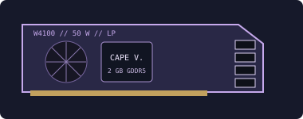

[ LEGACY WORKSTATION GRAPHICS ]
AMD FirePro W4100 2 GB
A 2014 low-profile professional graphics adapter built for compact workstations and four-display professional desktops.

Recorded specifications
| GPU | Cape Verde-class GCN; 512 stream processors. |
|---|---|
| Memory | 2 GB GDDR5, 128-bit memory interface. |
| Interface & power | PCI Express 3.0 x16; 50 W board-power class; slot-powered, no auxiliary PCIe power socket. |
| Outputs | Four Mini DisplayPort 1.2 connectors. Multi-screen modes and adapter requirements vary with driver and display. |
| Physical fit | Single-slot, low-profile half-length class. Confirm full-height/low-profile bracket, card length, airflow and adjacent-slot clearance on the exact OEM board. |
Workstation & driver compatibility
Designed for small-form-factor workstation visualization and multi-monitor productivity. Requires a PCIe x16 slot and a suitable bracket; its four MiniDP ports may need active adapters for some legacy display combinations.
- FirePro support is legacy. Install only an AMD archived professional driver branch that lists the W4100 and the workstation OS; a Radeon consumer driver is not a substitute certification.
- Check the OEM workstation's power/thermal envelope and the application's certified-driver list. Current CAD/visualization releases may no longer certify this card.
- Record subsystem ID and driver version; inspect the low-profile bracket, fan/heatsink and MiniDP connectors before reuse.
Sources & further reading
- AMD — previous drivers and product supportManufacturer archive; confirm W4100 and target-OS coverage in the selected driver.
- AMD — Radeon Pro Software for Enterprise 21.Q2 release notesOfficial professional-driver release and supported-product/OS notes.
- TechPowerUp GPU Database — FirePro W4100Independent specification cross-check; exact OEM label and AMD sources govern.
- Soul Z Gaming — AMD FirePro W4100 + Core i5 3470 (Tested in 10 Games) - Benchmark TestIndependent video review; treat as supplementary context, not primary manufacturer documentation.
Reference configuration only; OEM PCB, cooling, bracket and connector details can differ. Check the actual board dimensions before installation.